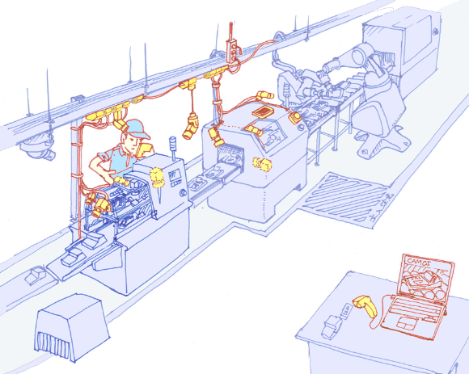
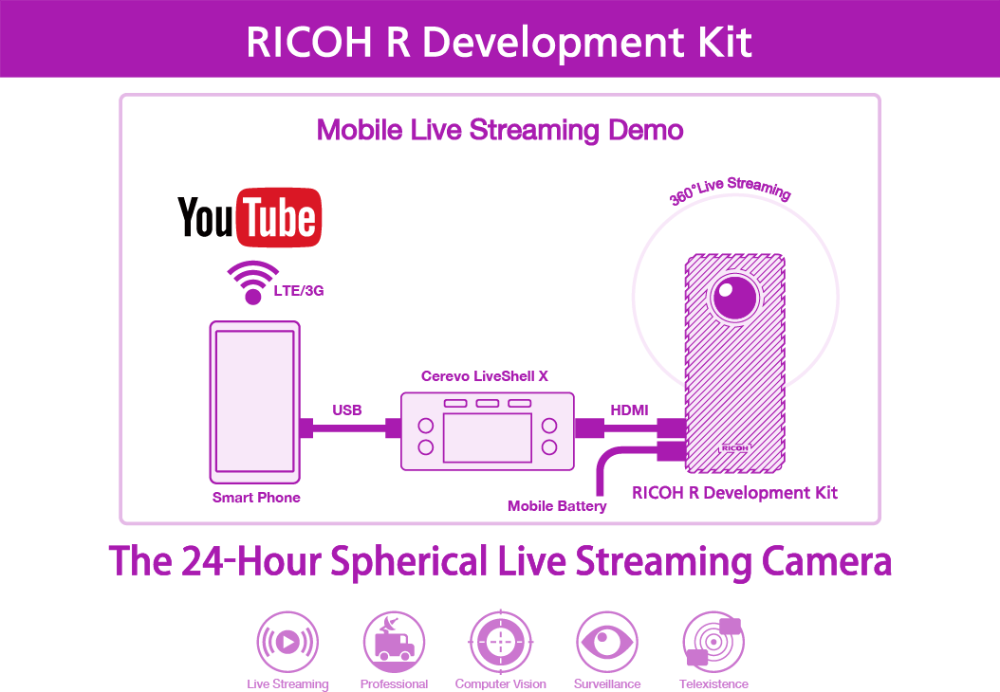
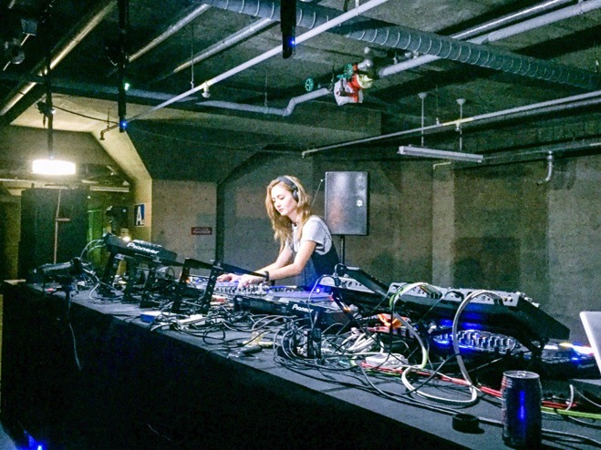
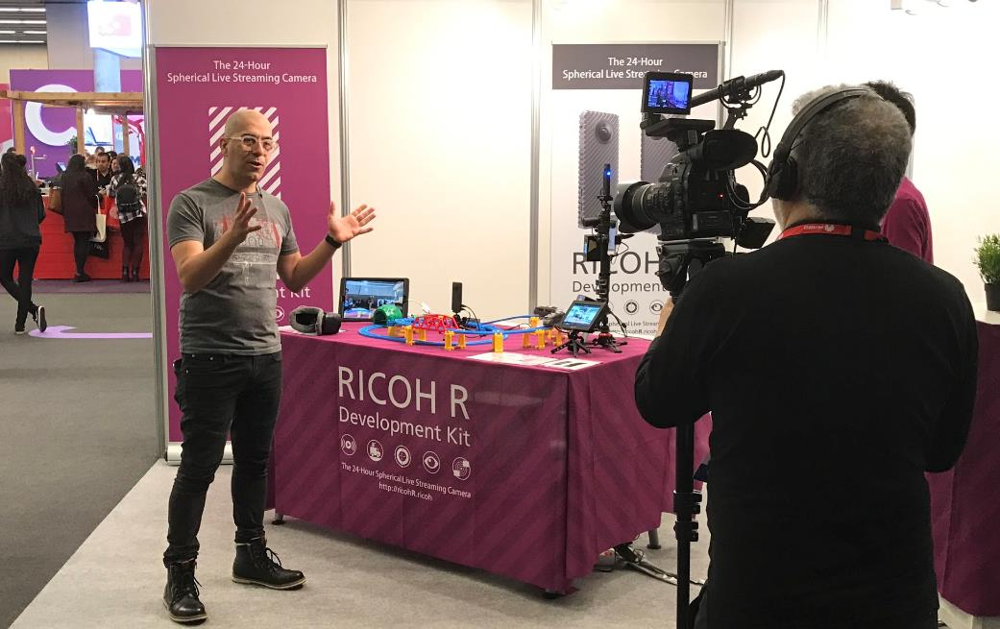
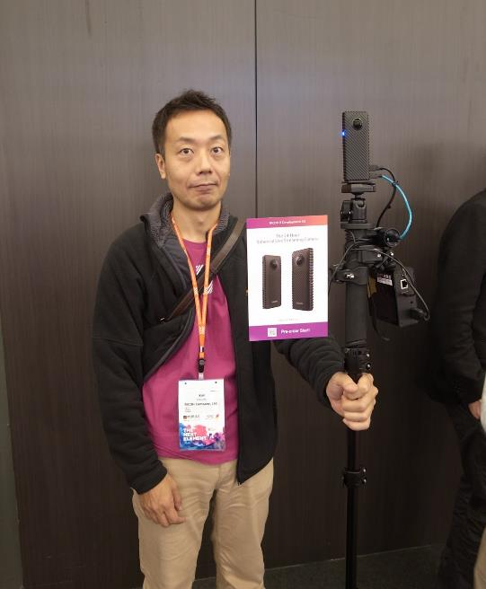
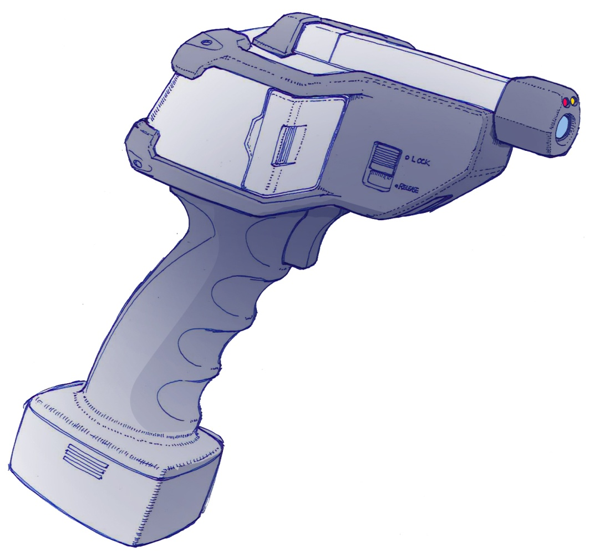
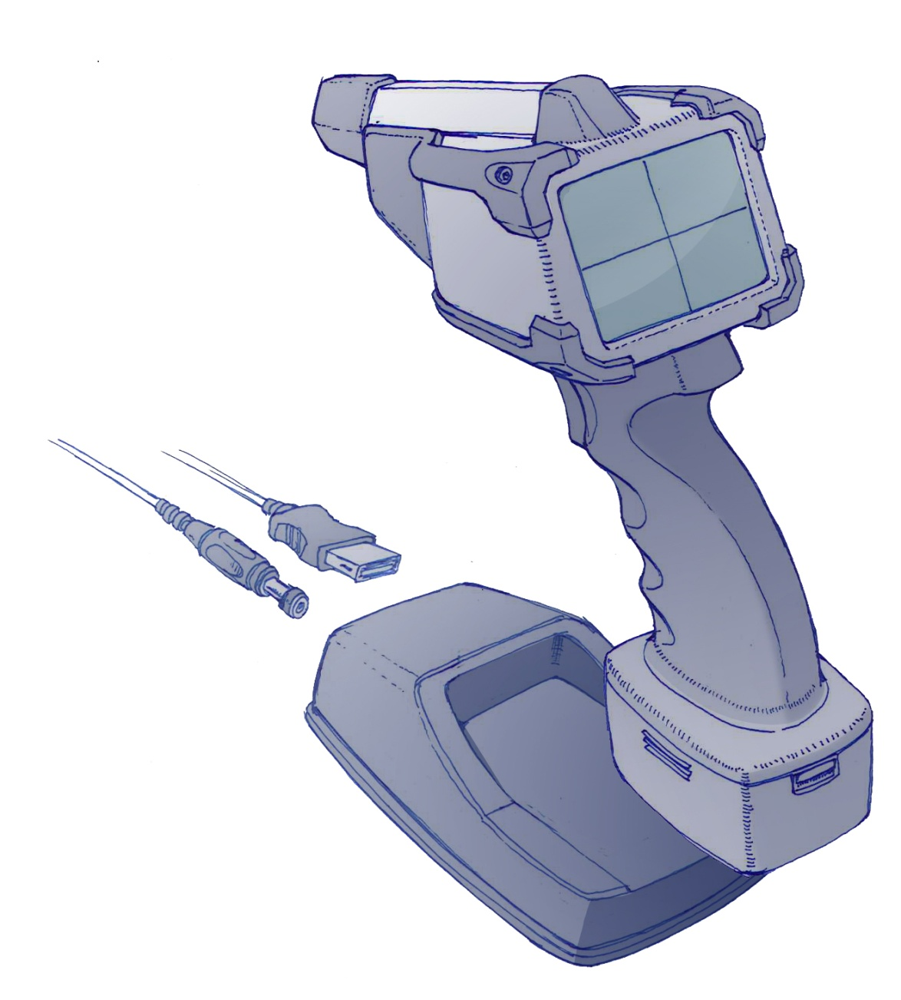

Selected Work — 02
生産現場の課題解決
PoC → 外販展開
「なぜ不良品が出るのかわからない」という工場で、ラインにカメラを置いて待ち、不良の原因を映像で見つけた。このカメラの取り組みが、360度ライブ配信キット RDK の外販につながった。
The Problem
同じように作っているのに、なぜ不良品が出るのか。
社内の生産部門・工場では、不良率の改善に日々取り組んでいた。バーコードによる履歴管理や工員への教育を徹底しても不良はなかなか減らず、現場は疲れていた。特に新製品の生産立ち上げ期に不良が多発し、品質が安定するまで常に神経を遣う状態が続いていた。
人の目と記録では、流れていく製品のすべての工程を追いきれなかった。
How We Found It
「今の課題は何ですか」と聞いても、答えは返ってこない。
工場では常に何かが起きている。だから生産本部の担当者に「今の課題は何ですか」と聞いても、答えられない。課題は多すぎて、言葉にならない。そこで聞くのをやめ、彼らの仕事を観察することにした。気になった場面をメモしていき、いくつかの課題候補を並べた。
そのうちの一つが、深圳工場の夜勤の時間帯、日本人社員がいないときに不良品が出やすい、ということだった。夜勤の間に何かが起きていることは現場も分かっていた。ただ、確かめる手立てが無かった。
そこで一部の生産ラインに複数のカメラを置き、常時録画してみた。何日か経って同じ不良が出たとき、その録画を巻き戻した。ローラー部品の取り付け位置が、微妙にズレていた。
現場は「夜勤に何かが起きている」までは知っていた。ただ、それ以上は聞いても出てこない。
一部のラインにカメラを置いて待つ。同じ不良が出た日の映像を見て、初めて原因の場所が分かった。
The Solution — All Line Recognizer
生産ラインの「全工程」を、カメラで記録する。
開発したのは「オールラインレコグナイザー（ALR）」。生産ラインの上部に複数のカメラを設置し、流れていく製品がどのように組み立てられていくかをすべて記録するシステム。
いつもと違う動きや操作があると、その時刻の映像に自動で印を付ける。あとで見る映像を絞れるので、「何か起きたかもしれない」場面を見落とさず、原因を探す時間が短くなった。
全部の工程を人の目で追うことはできない。録画しても、長い映像から問題の場所を探すのに時間がかかる。
全工程を複数のカメラで録り、いつもと違う動きに自動で印を付ける。見る映像をすぐ絞れる。

「聞いて出てこないものは、カメラを置いて待つことにした。」
Expansion — RICOH R Development Kit
工場で使ったカメラを、社外に売る。
PoCでカメラを使い込んだ経験が、別の製品につながった。業務用途に向けて市販のTHETAを改造した「RICOH R Development Kit（RDK）」で、360度映像を24時間ライブ配信できるカメラキットとして実験的に発売した。
展示会でデモをしたほか、ベンチャー企業数社と一緒に、DJイベントやプロレスを360度でライブ配信した。見る人が自分で向きを変えながら見られる配信として、海外のメディアにも何度か取り上げられた。
THETAを業務用に改造した、360度ライブ配信のカメラキット。24時間続けて配信でき、モバイル回線でも流せる。




Concept PoC — 現物スキャナー
遠隔地から、現物を3Dで見る。
生産現場には、もう一つ困りごとがあった。「現物を手元に持ち込まなくても確認できないか」。部品の不具合や製品の状態を離れた所にいる専門家に見てもらうには、これまでは現物を送るか、現地へ行くしかなかった。
そこで考えたのが、現場で現物をスキャンして3Dで送る、手で持つ機器。ピストル型の持ち手に、取り外せるペン型のカメラを付け、入り組んだ所でも撮れるようにした。レーザー距離計とセンサー、照明を入れ、暗い所や狭い所でも物の位置と形を測れる。今でいうデジタルツインを、現場で作ろうとした構想だった。


What This Showed
社内の困りごとから、外に売る製品へ。
社内の困りごとから始めたPoCが、外に売る製品になった。現場を観察して問題を見つけ、社内で技術を試し、外に売る形を考える。この順番は、いまのAdvisoryの仕事でもそのまま使っている。
Connected Projects